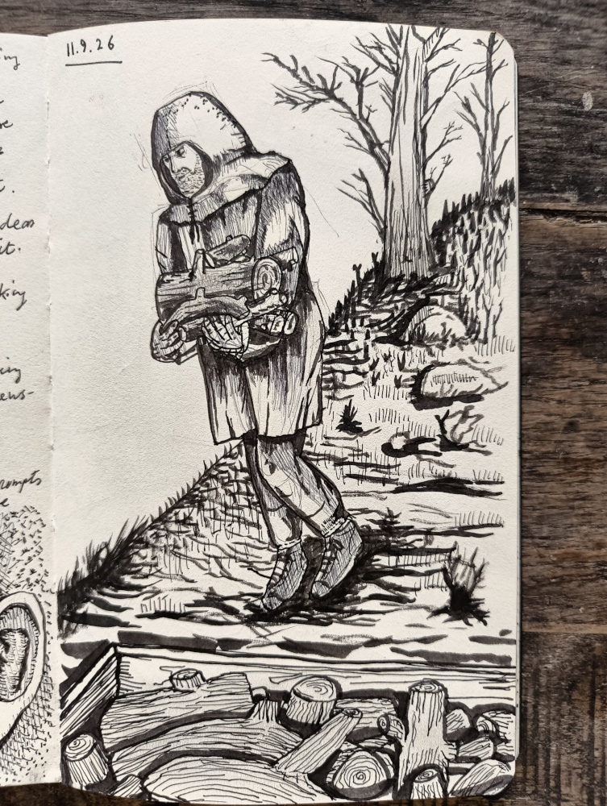
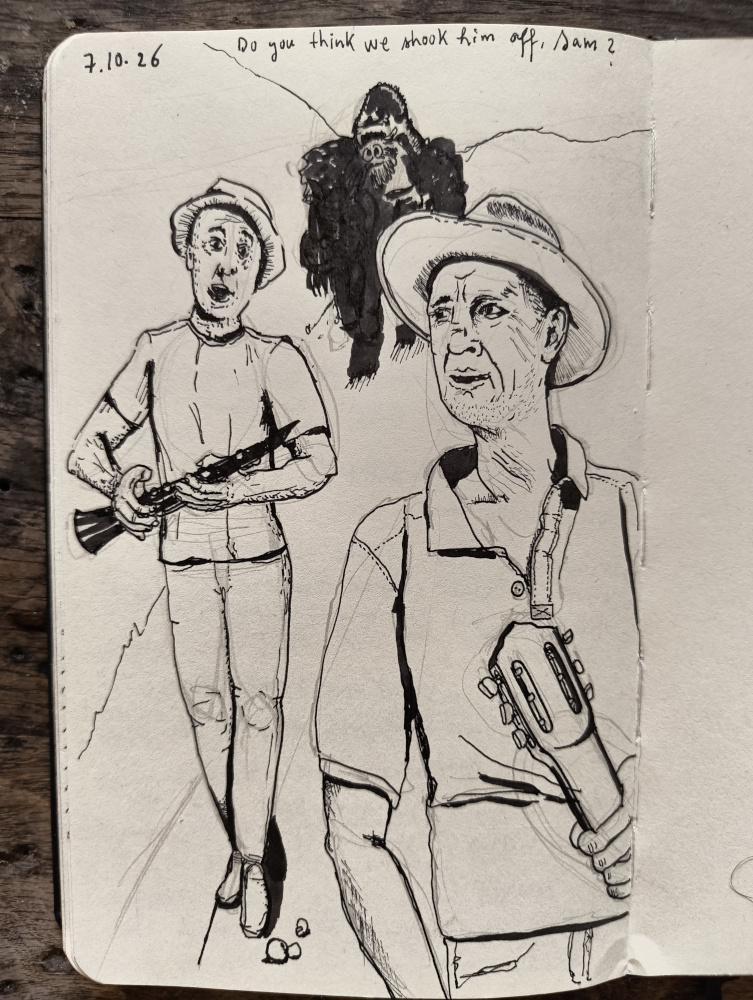

I'm feeling that I reached my limit with ballpoint pens, or at least for now. I am fully submerged in black permanent ink. Three fountain pens by nib size and a Kuretake brush pen all feeding from the one ink pot. The limit, by the way, I meet regularly. Sometimes because I lack the instructions, yet sometimes it is precisely the instructions that show me the door.
A few years ago I became fascinated with cornets. It was before Christmas in Durham, staying with my inlaws. The freezing December wind from the North Sea, the jazz records my father in law played, the smell of coal burning, the street brass bands, I was swimming in horns. In a second hand shop I spotted an old beaten up cornet, so I decided to buy it and have a go. On the bus on the way home, the crowd possesed by the Christmas spook were encouraging our children as they tried to blow a sound out of the old metal tube to no avail. The instrument was finally passed to Martha, then three, and she blew a perfect rumbling C and the crowd cheered.

That evening a neighbour, over a cup of tea, hearing me going on about my latest purchase, got up and pulled two cases out of the cabinet under the stairs, one with a cornet and one with a trumpet. I started practicing right away, by the time we were back in Spain I was going up and down the C major scale and improvising some basic tunes. Playing a cornet is not like a piano or a guitar, your neighbours know you play the cornet, your neighbours' neighbours too, so pretty soon I got tipped that the town's band leader is taking on students and I went to see him. He must have been under forty and his love was his trumpet, he kept it shiny clean. For the lesson he prepared a little printout for me to take home with a diagram and the exercises I was meant to practice at home. When I blew my first note, he corrected me: "not like this", and he blew one long note. The exercise was playing long notes and short notes and his instruction was to give this torture 15 minutes a day. I called him the next day to call it off. Ignorance is bliss.

A few months after this episode I was brought a broken old clarinet to repair, at the time I was building Spanish guitars in a little workshop, but I wouldn't shy from any job. I played around with it and cleaned it up trying to figure out the working of the instrument while not really knowing how to get a decent sound out of it. I ordered a set of pads, some cork strips, and reeds, and then on a second thought, I went back to the catalogue and ordered a new clarinet to have as reference. The clarinet, I thought, is as melodic and monophonic as a cornet, minus the embouchure threshold that the cornet proposes. I practiced on my own, I watched some videos, bought a couple of books, played short jazz phrases and hasidic Klezmer ones infront of the mirror, but my tone was inconsistent and forced, sometimes a shriek, sometimes just air and no tone. To be able to play anything with an acceptable tone there is no escape from the exact same drills the trumpet teacher printed for me.
So following the pattern here, the clarinet, the cornet and other similar attempts, I lay off the ballpoint pen for awhile. I have gaps in my technique that only millage could solve and fountain pens offer something else to look at for a while. Starting again always feels so liberating… (image gallery at the top)